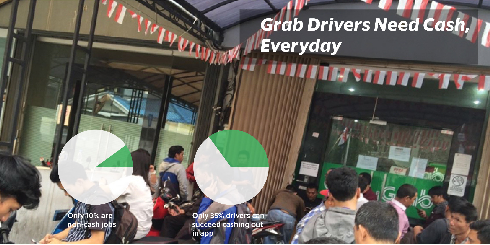
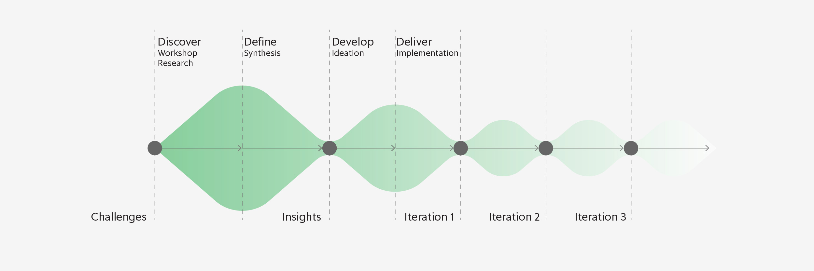
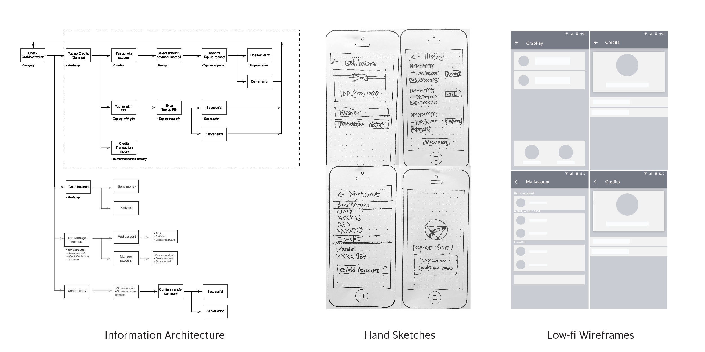
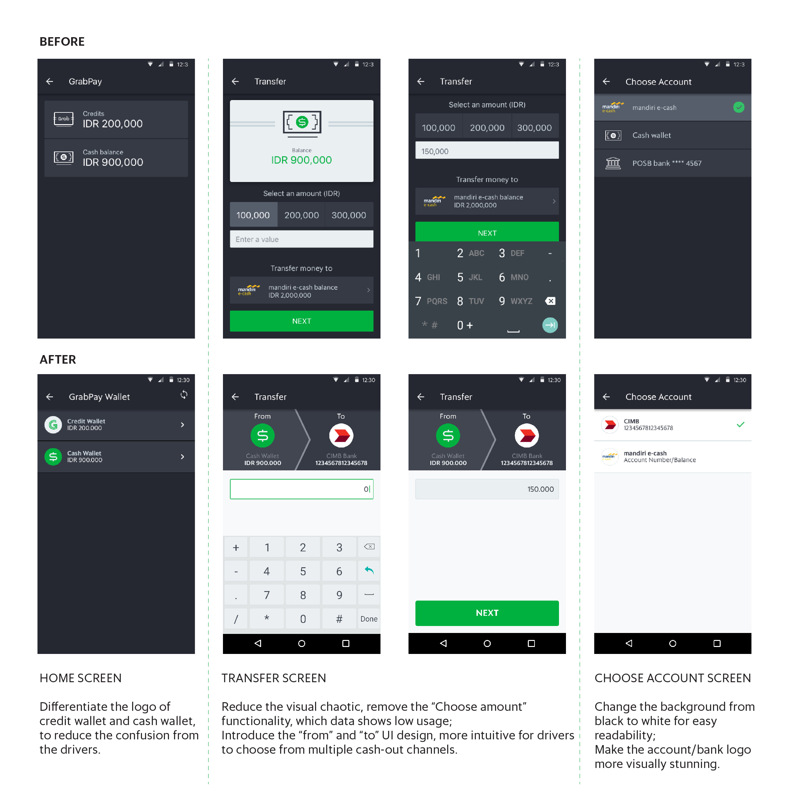
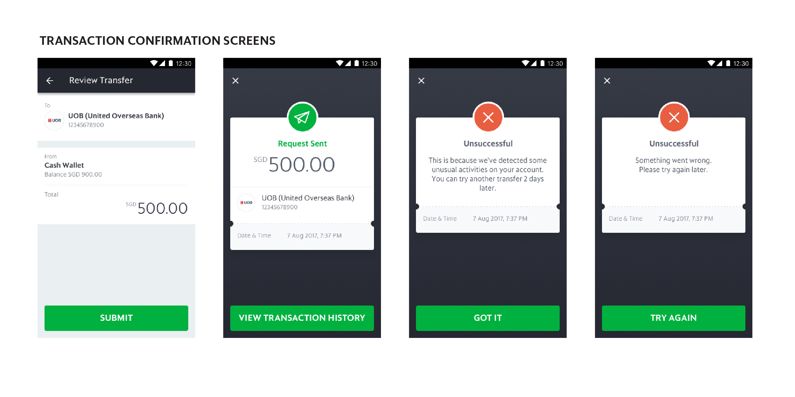

Grab drivers need to use the money they earn from driving to pay for bills and rentals etc. immediately. Currently the non-cash ride fare will be put into Driver’s GrabPay Wallet and shown in the app. If drivers can’t transfer their money to where they want to be instantly, the money residing in GrabPay Wallet is of little value to them.This project aims to increase the liquidity of Grab drivers' cash in their GrabPay Wallet by providing instant cash-out channels.
2017
UI/UX
Drivers need money everyday to pay for bills, rental, petrols etc. Currently the non-cash ride fare will be put into Driver’s GrabPay Wallet and shown in the app. If drivers can’t transfer their money to where they want to be instantly, the money residing in GrabPay Wallet is of little value to them. As a result, drivers are keen on taking cash jobs as they can receive immediate cash. As cash-less payment methods are getting more and more popular, how can we encourage drivers to take more non-cash GrabPay jobs? How can we enable drivers to transfer their money to where they want it to be instantly? How can we make the GrabPay Wallet function intuitive for all Grab drivers in Southeast Asia when performing instant cash-out?
Hypothesis: If we enable drivers to have instant access to cash in their GrabPay wallet through integrations with partners, so that money in their GrabPay wallet would be as liquid, if not more, as money in their bank account.
The project started with a design workshop and user research to understand the current user journey and users’ painpoints when using GrabPay Wallet; following ideation of sketching user flows and wireframes, and building prototypes for usability testing. Several sprints are planned to deliver incremental change to improve the whole user experience and functionality of the GrabPay Wallet for drivers.
To ensure the products will be useful for all Grab drivers from different regions in Southeast Asia, we conducted user research in selected cities (Singapore, Jakarta & Manila) to understand drivers’ financial behaviour, and how they use current GrabPay Wallet.
Given the insights from the research, the proposed design aim to:
Make it convenient for users to navigate through; Simplify information display to make it easy for users to read; Provide more detailed info to build trust; Provide useful content to tell user what happened, what to do and what might happen.
During design process, first I identified the flow of users throughout the product and drafted the information architecture to make sure the design is logically grouped and interrelated. Hand sketches and low-fi wireframes were used to align with engineers, PM, and resolve conflicts at an earlier stage. I also developed prototypes using Invision, Principle and conducted several rounds of usability testing before final design assets were delivered for development.
We first updated the UI design of top up and transfer screens to reduce the confusion when drivers using the wallet. The success rate of top up and transfer was doubled within two weeks after release.
We designed the adding bank self-serve experiences to allow drivers to add their bank account details via the Driver App, so they can cash out immediately without going to the Grab office / wait for Grab to update it manually.
22k users added bank account in-app smoothly within one week after release, which also reduced the operation cost significantly.
We revamped the the transaction history and receipt design, to provide clarify on transaction information to drivers. Since we laughed the new features, cash out inquiries have dropped sharply, which offered a huge help to CE & driver experience operation team.
We also revamped the transaction history design: drivers can sort their transaction by day or week; offer clear and simple list view as well as detail screen of every transaction to show more information.